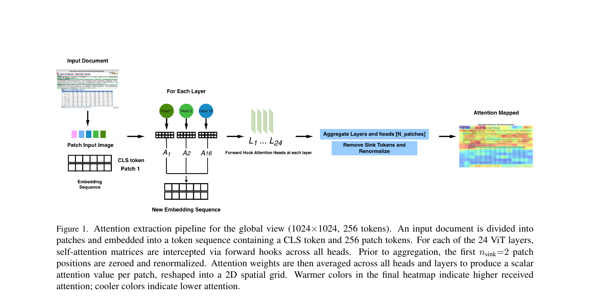
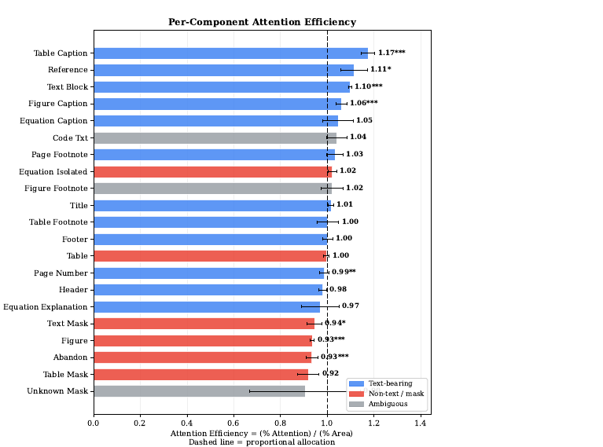
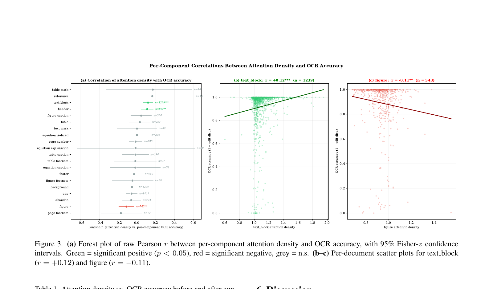
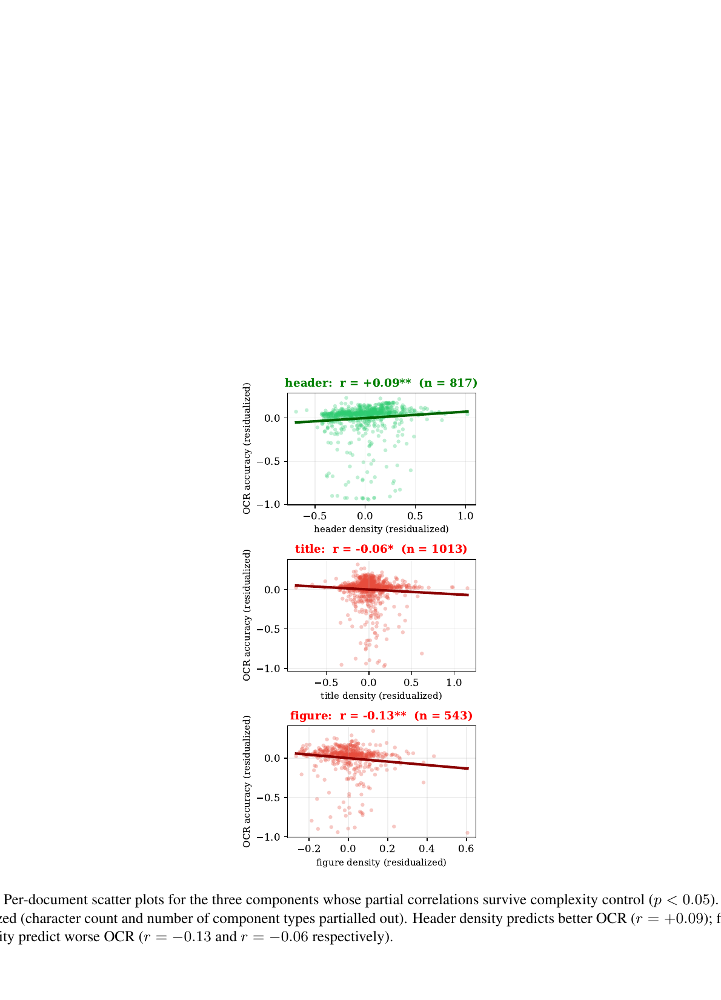

Document layout components form a fine-grained visual taxonomy: a single page may contain titles, text blocks, figures, captions, tables, equations, and footnotes. End-to-end vision-language OCR models receive no component-level supervision yet must implicitly discriminate among these categories to transcribe a page.
We extract spatial attention from Deepseek-OCR's vision encoder across OmniDocBench. We define attention efficiency (a component's attention share divided by its area share) and find a consistent directional split: text-bearing components are over-attended (text blocks 1.10× and table captions 1.17×), non-text regions under-attended (figures 0.94× and masks below 0.95×). 9 of 19 testable categories deviate significantly from proportional allocation after Bonferroni correction.
Per-document correlations between attention density and OCR accuracy are significant for several components. After partial-correlation control for document complexity, three components retain significant effects: figure density (r = −0.13, p < 0.01), header density (r = +0.09, p = 0.01), and title density (r = −0.06, p = 0.04).
We extract self-attention weights from DeepSeek-OCR's 24-layer CLIP ViT-L encoder using forward hooks across 1,355 pages from OmniDocBench. Attention is aggregated across all heads and layers, with sink tokens zeroed and renormalized. The resulting spatial attention maps are intersected with ground-truth component bounding boxes to compute per-component attention efficiency.

Figure 1. Attention extraction pipeline for the global view (1024×1024, 256 tokens).
The encoder systematically over-attends text-bearing components and under-attends non-text regions. 9 of 19 categories are significant after Bonferroni correction, with consistent directionality: every significant text-bearing category has efficiency > 1.00, while every significant non-text category has efficiency < 1.00.

Figure 2. Per-component attention efficiency across 22 document component types.
Raw correlations between attention density and OCR accuracy are significant for text blocks (r = +0.12) and figures (r = −0.11). After controlling for document complexity (character count and number of component types), most correlations are attenuated, but three components retain significant partial correlations.

Figure 3. Forest plot and scatter plots of per-component attention density vs. OCR accuracy.

Figure 4. Residualized scatter plots for components whose partial correlations survive complexity control.
@inproceedings{han2026ocr,
author = {Han, Johnathan and Barman, Samik and Cui, Lening and Li, Ruizhe and Zhu, Kevin},
title = {What Does an OCR Model Look At? Probing Implicit Component Discrimination in Deepseek-OCR},
booktitle = {Proceedings of the 13th Workshop on Fine-Grained Visual Categorization (FGVC13), CVPR},
year = {2026},
}{kind=link}